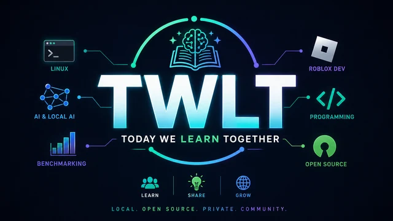

Local AI from a normal creator’s desk

Tested where it actually runs.
TWLT documents local AI on consumer hardware: what works, what does not, and what beginners can try without an enterprise lab.
4GB VRAM labLocal-firstLimits disclosed
$ twlt inspect --local
✓ hardware: consumer laptop
✓ vram: 4 GB
✓ method: repeat, record, explain
A lab you can
actually use.
No imaginary enterprise stack. No benchmark score without context. Just repeatable tests, normal hardware, and clear notes.
01 / LIVE DATA→02 / START HERE→03 / HOW IT WORKS→04 / THE STACK→
Model comparisons
Published benchmark tables for model libraries, reasoning, stability, and real coding tasks.
Local AI basics
Tokens, context, VRAM, quantization, and other useful terms in plain language.
Testing methodology
Real prompts, coding work, agent behavior, and hardware reality.
Tools in the workflow
Local runtimes, coding agents, cloud comparisons, and creative utilities.
REAL
LIMITS
LIMITS
The test bench
Small machine.
Useful answers.
MachineMSI GF63 Thin
GPURTX 3050 Laptop · 4GB VRAM
Memory16GB RAM
ApproachReal-world constraints, real results
The philosophy
A company testing a $100k AI deployment and me testing a 4GB VRAM laptop are doing similar things at different scales: test real tasks, measure real performance, document what happens.